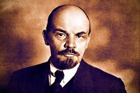
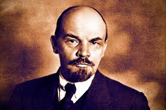

Soviet Union, former northern Eurasian empire (1917/22–1991) stretching from the Baltic and Black seas to the Pacific Ocean and, in its final years, consisting of 15 Soviet Socialist Republics (S.S.R.’s): Armenia, Azerbaijan, Belorussia (now Belarus), Estonia, Georgia, Kazakhstan, Kirgiziya (now Kyrgyzstan), Latvia, Lithuania, Moldavia (now Moldova), Russia, Tajikistan, Turkmenistan, Ukraine, and Uzbekistan. The capital was Moscow, then and now the capital of Russia.
national anthem of the Soviet Union
Instrumental version of “State Anthem of the Soviet Union,” the national anthem of the Soviet Union from 1944 to 1991. Its melody is identical to the current national anthem of Russia.
During the period of its existence, the Union of Soviet Socialist Republics was by area the world’s largest country. It was also one of the most diverse, with more than 100 distinct nationalities living within its borders. The majority of the population, however, was made up of East Slavs (Russians, Ukrainians, and Belorussians); these groups together made up more than two-thirds of the total population in the late 1980s.
 
